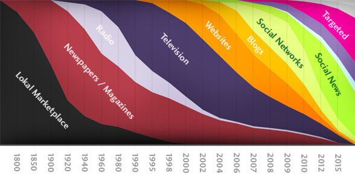

Readers' Changing Habits
Readers’ habits for consuming news media have changed dues to the advent of new technologies, especially mobile devices and the internet.
Before the advent of the internet and cable television as a widespread resource for consuming news media, the majority of people accessed news from newspaper and radio. The amount of time spent on these activities has steadily decreased over time, as shown in a study by the Kaiser Media Foundation. In 1999, youths between ages 8 and 18 spent an average of 43 minutes reading printed material such as books and newspaper. By 2009, this number had decreased to 38 minutes per day. More alarming, however, is the increase of computer usage from 27 minutes to 1 hour and 29 minutes per day. This, in addition to other drastic increases in video game usage and music or audio, clearly shows the trend of digital media over print.
Readers are also changing the way they view data. The fastest-growing category for viewing media is mobile, which is expected to achieve 150 million users who view the web by 2015. Cell phones are the biggest contributor to this traffic, though tablets such as the iPad are becoming more and more prevalent. A poll by the Pew Research Center shows that of those who possess a tablet, 31% are spending more time viewing news and are turning to new sources for this news. This shift in consumer taste toward news available on-demand is too great to ignore, and companies must move toward digital or be steamrolled by others that do.